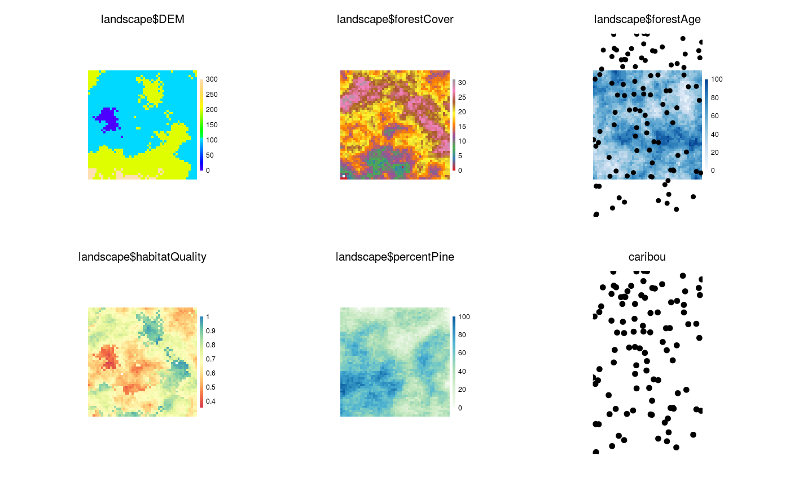

Clear plotting device
Under some conditions, a device and its metadata need to be cleared manually.
This can be done with either the new = TRUE argument within the call to
Plot.
Sometimes, the metadata of a previous plot will prevent correct plotting of
a new Plot call.
Use clearPlot to clear the device and all the associated metadata
manually.
clearPlot(dev = dev.cur(), removeData = TRUE, force = FALSE) # S4 method for numeric,logical clearPlot(dev = dev.cur(), removeData = TRUE, force = FALSE) # S4 method for numeric,missing clearPlot(dev, force) # S4 method for missing,logical clearPlot(removeData, force) # S4 method for missing,missing clearPlot(dev = dev.cur(), removeData = TRUE, force = FALSE)
Arguments
| dev | Numeric. Device number to clear. |
|---|---|
| removeData | Logical indicating whether any data that was stored in the
|
| force | Logical or "all". Sometimes the graphics state cannot be fixed by a simple clearPlot(). If TRUE, this will close the device and reopen the same device number. If "all", then all quickPlot related data from all devices will be cleared, in addition to device closing and reopening. |
Examples
library(sp) library(raster) library(RColorBrewer) library(rgdal) files <- dir(system.file("maps", package = "quickPlot"), full.names = TRUE, pattern = "tif") maps <- lapply(files, raster) names(maps) <- lapply(maps, names) # put layers into a single stack for convenience landscape <- stack(maps$DEM, maps$forestCover, maps$forestAge, maps$habitatQuality, maps$percentPine) # can change color palette setColors(landscape, n = 50) <- list(DEM = topo.colors(50), forestCover = brewer.pal(9, "Set1"), forestAge = brewer.pal("Blues", n = 8), habitatQuality = brewer.pal(9, "Spectral"), percentPine = brewer.pal("GnBu", n = 8)) # Make a new raster derived from a previous one; must give it a unique name habitatQuality2 <- landscape$habitatQuality ^ 0.3 names(habitatQuality2) <- "habitatQuality2" # make a SpatialPoints object caribou <- sp::SpatialPoints(coords = cbind(x = stats::runif(1e2, -50, 50), y = stats::runif(1e2, -50, 50))) # use factor raster to give legends as character strings ras <- raster(extent(0, 3, 0, 4), vals = sample(1:4, size = 12, replace = TRUE), res = 1) # needs to have a data.frame with ID as first column - see ?raster::ratify levels(ras) <- data.frame(ID = 1:4, Name = paste0("Level", 1:4)) Plot(ras, new = TRUE)# Arbitrary values for factors, including zero and not all levels represented in raster levs <- c(0:5, 7:12) ras <- raster(extent(0, 3, 0, 2), vals = c(1, 1, 3, 5, 8, 9), res = 1) levels(ras) <- data.frame(ID = levs, Name = LETTERS[c(1:3, 8:16)]) Plot(ras, new = TRUE)# Arbitrary values for factors, including zero and not all levels represented in raster levs <- c(0:5, 7:23) ras <- raster(extent(0, 3, 0, 2), vals = c(1, 1, 3, 5, 8, 9), res = 1) levels(ras) <- data.frame(ID = levs, Name = LETTERS[1:23]) Plot(ras, new = TRUE)# SpatialPolygons sr1 <- sp::Polygon(cbind(c(2, 4, 4, 1, 2), c(2, 3, 5, 4, 2)) * 20 - 50) sr2 <- sp::Polygon(cbind(c(5, 4, 2, 5), c(2, 3, 2, 2)) * 20 - 50) srs1 <- sp::Polygons(list(sr1), "s1") srs2 <- sp::Polygons(list(sr2), "s2") spP <- sp::SpatialPolygons(list(srs1, srs2), 1:2) clearPlot()Plot(ras)clearPlot()Plot(landscape)# Can add two maps with same name, if one is in a stack; they are given # unique names based on object name Plot(landscape, caribou, maps$DEM)Plot(spP)# example base plot clearPlot()# Can plot named lists of objects (but not base objects yet) ras1 <- ras2 <- ras a <- list() for (i in 1:2) { a[[paste0("ras", i)]] <- get(paste0("ras", i)) } a$spP <- spP clearPlot()Plot(a)# clean up clearPlot()